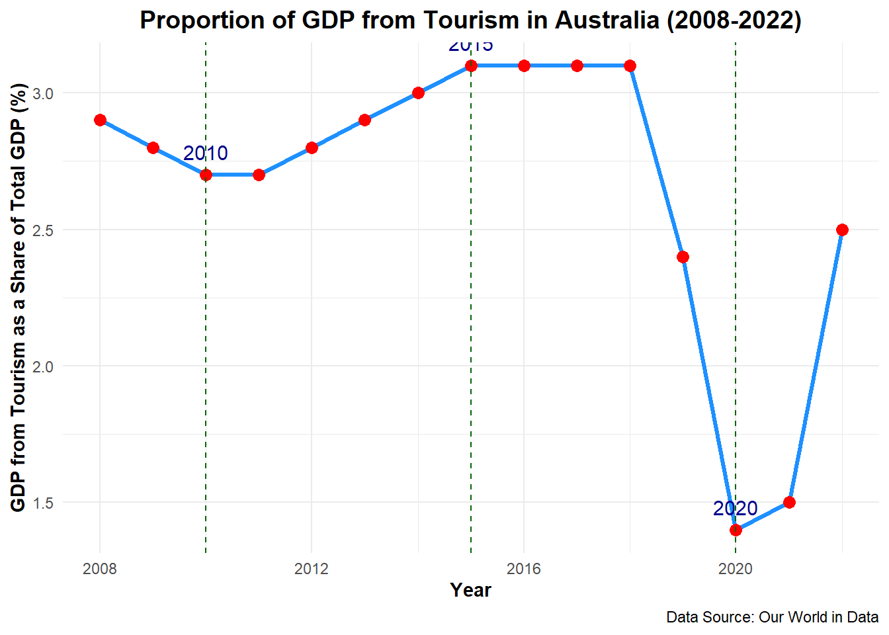

Introduction
Tourism has long been a significant driver of economic growth and employment in Australia. With its stunning natural landscapes and vibrant cities, the country has been a popular destination for international and domestic travelers alike. However, the past decade has seen major disruptions, with the COVID-19 pandemic causing an unprecedented decline in the tourism sector’s contribution to the national economy.
In this post, we analyze how tourism’s share of Australia’s Gross Domestic Product (GDP) has evolved from 2008 to 2022. We will look at the trends, the pandemic’s impact, and the subsequent recovery to understand the resilience and vulnerabilities of the tourism industry.
Problem Description
Tourism plays a crucial role in Australia’s economy, contributing significantly to its Gross Domestic Product (GDP), job creation, and regional development. However, the tourism industry is highly sensitive to global changes, such as economic downturns and pandemics. Analyzing the industry’s contribution to GDP helps us understand its strengths and weaknesses, allowing policymakers and stakeholders to strategize effectively.
This blog post examines the trends in tourism’s contribution to Australia’s GDP from 2008 to 2022, focusing on the dramatic decline caused by the COVID-19 pandemic and the subsequent recovery. The analysis sheds light on how global events can influence tourism and what can be done to ensure its long-term stability.
Data Source
The data for this analysis was sourced from a website Our World in Data specifically focusing on the proportion of GDP from tourism for various countries between 2008 and 2022.
The dataset includes fields such as country name, year, and the percentage of GDP that comes from tourism.
Data Dictionary
Entity: The name of the country being analyzed for its tourism-related GDP.
Code: A standardized abbreviation or code representing the country, often used in data systems.
Year: The specific year in which the data point was recorded or reported.
GDP from tourism as a share of total GDP: The percentage of a country’s Gross Domestic Product that is generated from tourism activities relative to its total GDP.
Details of the Work
Step 1 : Data Cleaning and Preparation The initial dataset was meticulously filtered to exclusively highlight Australia’s tourism sector. This involved isolating data points specific to Australia while discarding irrelevant entries.
Step 2 : Handling Missing Values The dataset was reviewed for missing values to ensure completeness. Instances of missing data were addressed through interpolation for continuity wherever feasible. For critical data points that could not be reliably estimated, those entries were removed to maintain the overall integrity and consistency of the dataset. This careful handling of missing values ensured that the analysis was based on reliable and complete information.
Step 3 : Exploratory Data Analysis (EDA) Comprehensive descriptive statistics were calculated to gain insights into the data’s distribution, variability, and underlying patterns. This step was crucial for identifying any trends or anomalies within the dataset, thereby confirming its suitability for deeper analytical processes. Visualizations such as histograms and box plots were employed to illustrate the distribution and assess the presence of outliers.
Step 4 : Trend Analysis A line chart was created to effectively visualize the trends in tourism’s contribution to Australia’s GDP from 2008 to 2022. This chart highlighted key phases: steady growth leading up to 2019, a dramatic decline during the pandemic years, and a tentative recovery in 2021-2022. The trends illustrated in the chart serve to encapsulate the impact of global events on the tourism sector, as referenced in Figure 1.
Step 5 : Contextual and Comparative Analysis The analysis delved into the contextual backdrop of the observed trends, linking them to significant global events such as the COVID-19 pandemic. By comparing the post-pandemic recovery trajectory with the pre-pandemic stability, the analysis provides critical insights for policymakers and stakeholders, highlighting the need for strategic interventions to bolster the tourism sector’s resilience and adaptability in the face of future challenges.
Analysis
The graph captures several notable trends and turning points during this period, reflecting both global and domestic events that have influenced the tourism sector’s economic significance in the country.
1. Initial Stability (2008–2012): The share of GDP from tourism exhibited a relatively stable trend between 2008 and 2012, fluctuating slightly between 3.0% and 3.4%. This period reflects a post-Global Financial Crisis (GFC) recovery phase for the global economy, during which Australia’s tourism sector was somewhat resilient. This stability can be attributed to Australia’s strong economic fundamentals at the time and the continuous demand for inbound tourism, particularly from Asian markets like China and Japan. Moreover, domestic tourism remained strong, supporting the sector’s steady contribution to GDP.
2. Growth Phase (2013–2017): From 2013 to 2017, the share of tourism in GDP saw a gradual increase, peaking at around 3.7% in 2016-2017. This period of growth coincided with the Australian government’s strategic focus on tourism as a key economic driver, coupled with the depreciation of the Australian dollar, which made the country a more affordable destination for international visitors. Additionally, Australia’s tourism infrastructure development and successful marketing campaigns (e.g., “There’s Nothing Like Australia”) helped attract a growing number of high-spending tourists, particularly from China and India.
3. Stagnation and Decline (2018–2020): The period between 2018 and early 2020 was marked by a slight decline in tourism’s contribution to GDP. This was due to a range of factors, including a stronger Australian dollar, which reduced the competitiveness of Australia as a travel destination, and a plateauing in the growth rate of international visitor arrivals. Notably, the catastrophic bushfires in 2019-2020 severely impacted regional tourism, leading to cancellations and a reduction in tourism expenditure.
4. COVID-19 Pandemic Impact (2020–2022): The most significant disruption in the timeline is observed during the years 2020 and 2021, where the share of tourism in GDP fell sharply to around 2.7%—a historic low in the past 15 years. This decline is directly attributed to the impact of the COVID-19 pandemic, which led to international border closures, lockdowns, and restrictions on domestic travel. Tourism was one of the hardest-hit sectors, with international visitor numbers dropping by over 99% in some months and domestic tourism plummeting due to state-level restrictions. The sharp downturn in tourism’s share of GDP reflects these unprecedented conditions.
5. Post-Pandemic Recovery and Uncertainty (2022): By 2022, there is a slight uptick in the proportion of GDP from tourism, indicating a slow recovery as international borders reopened and domestic travel resumed. However, the recovery is uneven, with some regions and sectors (e.g., business travel) lagging behind others (e.g., leisure tourism). While the slight increase is a positive sign, the overall share remains below pre-pandemic levels, suggesting that the tourism sector still faces challenges in returning to its former economic prominence.
It illustrates a relatively stable period from 2008 to 2018, followed by a sharp decline during the COVID-19 pandemic years (2019-2020) and a gradual recovery starting in 2021.
- Visual Analysis of Tourism’s Contribution to GDP
- Tabular Analysis of Key Data Points
The table below @table-1 presents a summary of key data points that highlight the trends in tourism’s contribution to GDP:
| Year | Tourism GDP as % of Total GDP | Key Events |
|---|---|---|
| 2008 | 2.9 | Global Financial Crisis impact |
| 2015 | 3.1 | Tourism growth due to increased international arrivals |
| 2019 | 2.4 | Decline before the pandemic |
| 2020 | 1.4 | Impact of COVID-19 pandemic |
| 2022 | 2.5 | Initial recovery phase |
Conclusion
Tourism’s contribution to Australia’s GDP has seen considerable fluctuations over the period from 2008 to 2022. While the sector experienced growth from 2015 to 2018, the sharp decline in 2020 due to the COVID-19 pandemic had a profound impact on its economic contribution. The slight recovery in 2022 suggests that with strategic support, the tourism sector can regain its position as a significant economic driver.
Future strategies should focus on diversifying tourism offerings, enhancing marketing efforts, and building infrastructure to support a resilient tourism industry capable of withstanding global disruptions.
Reference
- UNWTO (2024) – processed by Our World in Data. “Share of tourism in total GDP” [dataset]. UNWTO, “Tourism direct GDP as a proportion of total GDP” [original data]. Retrieved September 5, 2024 from https://ourworldindata.org/grapher/tourism-gdp-proportion-of-total-gdp